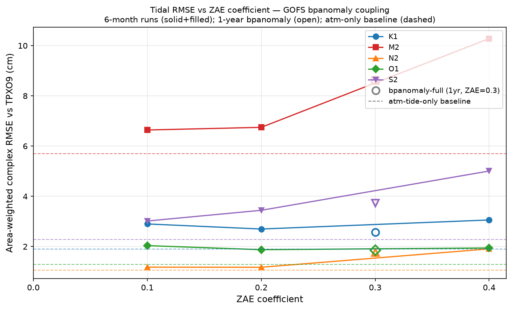
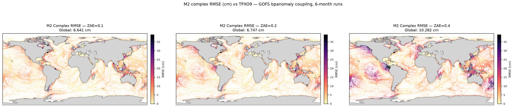
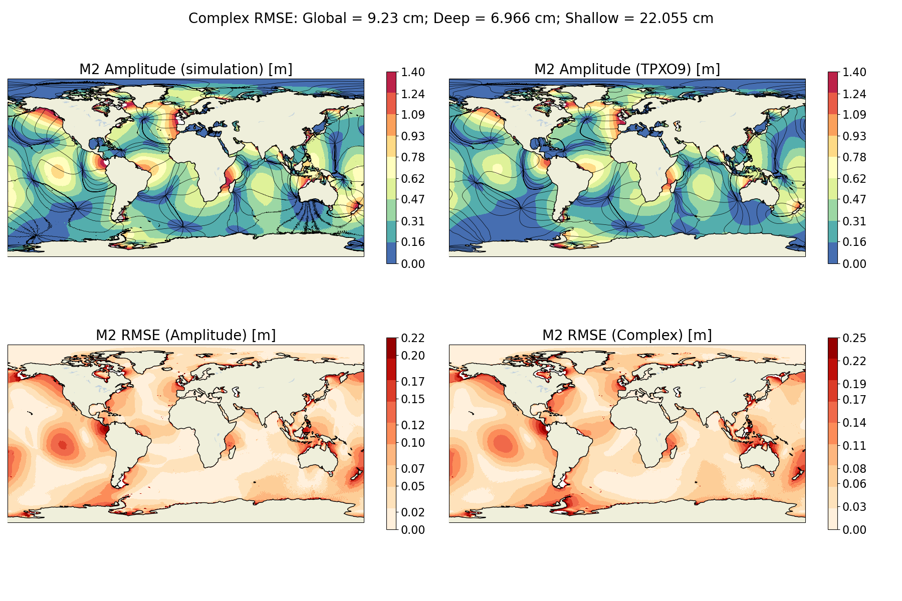

The ZAE (Zhang–Arbic–Engwirda) coefficient controls the strength of topographic
internal wave drag applied to the barotropic tide. All runs here use the full
GOFS3.1 bpanomaly coupling; the coefficient is varied across
0.1, 0.2, and 0.4 to determine whether higher drag can compensate for the
phase degradation introduced by the GOFS bottom pressure forcing.
Runs are 6-month (Oct 2016 – Apr 2017) with harmonics over Jan–Apr 2017 (90 days). The full-year bpanomaly (ZAE=0.3) and atm-tide-only (ZAE=0.3) baselines are included for reference but are not directly comparable in absolute magnitude.

Filled markers: 6-month bpanomaly runs at ZAE=0.0, 0.1, 0.2, 0.4. Open markers: 1-year bpanomaly run at ZAE=0.3. Dashed lines: atm-tide-only baseline (1yr, ZAE=0.3).

M2 complex RMSE (cm) vs TPXO9 for ZAE=0.0 (left), 0.1, 0.2, and 0.4 (right). Common color scale clipped at 98th percentile across the four maps.

Each panel: (top-left) MPAS-Ocean amplitude, (top-right) TPXO9 amplitude, (bottom-left) amplitude RMSE, (bottom-right) complex RMSE. Phase co-tidal lines overlaid. Color scale in metres.
| Con | ZAE=0.0 6mo |
ZAE=0.1 6mo |
ZAE=0.2 6mo |
ZAE=0.4 6mo |
BP Anom. 1yr |
Atm Only 1yr ★ |
|---|---|---|---|---|---|---|
| M2 | 9.230 | 6.006 | 6.154 | 9.869 | 8.142 | 4.979 |
| S2 | 3.491 | 2.867 | 3.291 | 4.881 | 3.582 | 2.117 |
| N2 | 1.791 | 1.055 | 1.046 | 1.820 | 1.654 | 0.920 |
| K1 | 2.823 | 2.843 | 2.632 | 2.962 | 2.496 | 1.861 |
| O1 | 2.164 | 2.034 | 1.862 | 1.934 | 1.858 | 1.336 |
| Con | ZAE=0.0 6mo |
ZAE=0.1 6mo |
ZAE=0.2 6mo |
ZAE=0.4 6mo |
BP Anom. 1yr |
Atm Only 1yr ★ |
|---|---|---|---|---|---|---|
| M2 | 6.966 | 3.759 | 4.621 | 9.019 | 7.135 | 2.695 |
| S2 | 2.818 | 2.113 | 2.657 | 4.320 | 3.065 | 1.336 |
| N2 | 1.423 | 0.695 | 0.821 | 1.672 | 1.426 | 0.542 |
| K1 | 1.762 | 1.609 | 1.339 | 1.754 | 1.261 | 1.134 |
| O1 | 1.439 | 1.365 | 1.132 | 1.261 | 1.112 | 0.686 |
| Con | ZAE=0.0 6mo |
ZAE=0.1 6mo |
ZAE=0.2 6mo |
ZAE=0.4 6mo |
BP Anom. 1yr |
Atm Only 1yr ★ |
|---|---|---|---|---|---|---|
| M2 | 22.055 | 16.286 | 14.442 | 16.920 | 15.373 | 14.176 |
| S2 | 6.724 | 6.368 | 6.870 | 8.797 | 6.825 | 4.553 |
| N2 | 3.946 | 2.702 | 2.283 | 3.053 | 3.292 | 2.475 |
| K1 | 6.686 | 7.213 | 7.011 | 7.702 | 6.626 | 3.973 |
| O1 | 5.136 | 4.615 | 4.543 | 4.475 | 4.530 | 2.946 |
All values in cm. ★ Atm-Only is the target baseline (no GOFS coupling). Green = lowest RMSE among the four 6-month ZAE runs; red = highest. Atm-Only and BP-Anomaly 1yr columns shown for reference only.